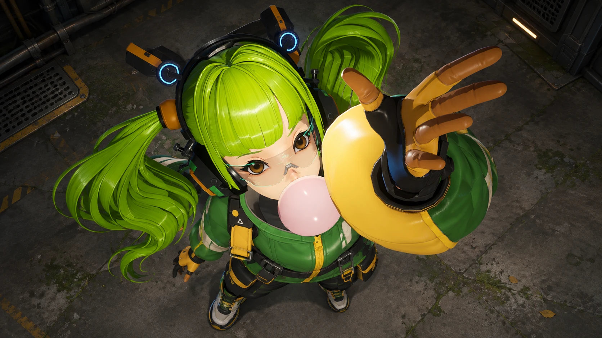
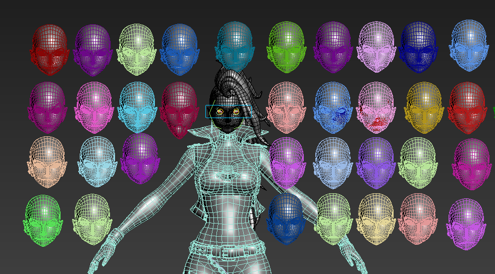

PROJECT OVERVIEW
WAKE RUNNERS
SF 세계관의 가속·감속 기반 고속 전투를 다룬 PC 탑다운 팀 대전 액션 게임
참여 기간 · 2022.3 — 2023.4
MY WORK
총 작업 공수 · 15MD
시네마틱 10MD · 레이아웃 6MD + 디테일 애니메이션 4MD
페이셜 5MD · 캐릭터 표정 제작 및 얼굴 리깅
01 / CINEMATIC PRODUCTION
- Concept & Layout
기동장치·무기·캐릭터성을 강조한 연출 구성 및 콘티 겸 러프 레이아웃 제작
- Cinematic Animation
캐릭터별 포즈·타이밍 설계 및 디테일 애니메이션 제작
웨이크러너 — 연출 의도와 구현
웨이크러너에서 주어진 장면은 발에 장착한 기동장치와 무기를 보여주는 짧은 시네마틱이었습니다. 같은 장치라도 누가 쓰느냐에 따라 다르게 보이기를 바랐고, 캐릭터마다 움직이는 방식에서 연출을 시작했습니다.
스토리보드에서 동작의 흐름을 정하고, 레이아웃에서는 발끝부터 머리까지 이어지는 포즈에 각 인물의 무게감을 실었습니다. 한 포즈에 얼마나 머물고 언제 다음 동작으로 넘어갈지 직접 조절하고 싶어 손으로 키를 잡는 방식을 제안했습니다. 이 방향으로 완성한 캐릭터 연기는 내부에서도 긍정적인 평가를 받았습니다.
카라 시네마틱 제작 과정 · 레이아웃에서 완성까지
카라는 주요 포즈를 먼저 잡는 포즈 투 포즈 방식으로 레이아웃을 만들었습니다. 각 포즈의 실루엣과 동작 사이의 간격이 실제 화면에서 어떻게 읽히는지 팀과 함께 볼 수 있도록, 이 단계부터 엔진 카메라로 장면을 검토하는 방식을 제안했습니다.
02 / FACIAL PIPELINE DEVELOPMENT
몸짓으로 보여준 성격을 얼굴 연기로 이어가려면 캐릭터마다 다른 얼굴 구조에 맞는 표정이 필요했습니다. 이를 위해 모프 타겟 제작과 검수부터 Morpher 구성, 시선과 얼굴 리깅까지 전담했습니다.
CONCEPT
캐릭터별 표정 제작부터 Unreal 연동까지 이어지는 페이셜 파이프라인
얼굴 형태와 토폴로지가 서로 달라, Unreal Engine에서 사용할 ARKit 기준 표정 타겟 52종을 캐릭터별로 구성하고 각각의 변형을 검수했습니다.
제작 과정

- 형태·토폴로지 대응
Wrap을 활용한 기준 얼굴·대상 캐릭터 정합
- 표정 전달·일괄 추출
Cage·Skin Wrap 기반 변형 전이, Morpher를 활용한 기준 표정·강도별 샘플 일괄 처리
- 타겟 정리·오류 확인
이름·채널 대응과 누락 검사 통합. 문제 부위 선택·비교·되돌리기 절차 정리
- 캐릭터별 디테일 보정
눈 감김·입 벌림 및 눈꺼풀·입술·입 안 형태 조정
시선 디테일
시선이 옮겨가는 짧은 순간에도 인물의 의도가 읽히기를 바랐습니다. 눈동자가 움직일 때 눈 주변 근육도 함께 반응하도록 리깅을 시도했습니다.
후속 R&D
AI를 접목한 제작 파이프라인
모프 타겟 제작
기존 프로젝트 작업 4MD → 후속 R&D 작업 2MD. 모프 타겟 제작 공정의 소요 시간 비교.
표정 전달·추출·채널 정리 통합. AI 보조 공정 분석·스크립트 작성·오류 점검을 통한 반복 작업 축소 및 캐릭터별 형태 보정 집중
본 기반 페이셜 제작 · 엔진 연동
-
본 리깅 기반 표정과 모프 타깃 제작·검수 및 Unreal Engine 적용
MetaHuman 음성 립싱크와 iPhone 페이셜 캡처(Live Link)를 활용한 캐릭터 표정 연기 구현
시퀀서에서 눈썹·눈 깜빡임·입술·턱 움직임의 키프레임 보정
테스트 에셋
외부 캐릭터·레벨 에셋을 활용한 페이셜 연구 영상. 기존 표정 타겟 미사용, 메시 기반 페이셜 리깅·표정 제작·엔진 연동. 모델·레벨 출처는 아래 링크 참조
CHARACTER · Polyart Studio — Modular Stylized Character Creator · Adventurer ↗
ENVIRONMENT · Six Sides Studios — Ready Map Vol 2 · Bridge Environment / Nature ↗